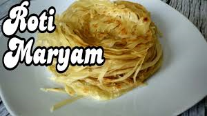
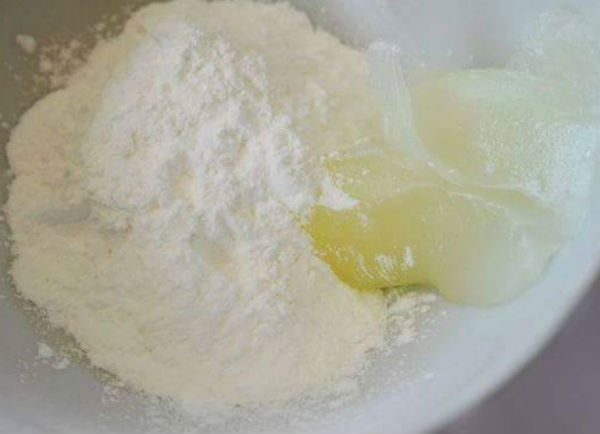
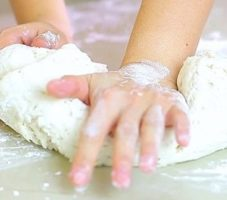
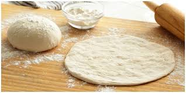

Resep Kue Maryam
Bahan-bahan

- 250 gr tepung terigu
- 1 butir telur
- 3 sdm margarin, lelehkan
- 100 ml air hangat
- 2 sdm susu bubuk(optional)
- 1/2 sdt garam
- margarin leleh untuk olesan
- minyak untuk merendam
Langkah-langkah
- Campur Semua Bahan Roti Menjadi Satu

- Aduk Adonan dengan Tangan atau yang Lain, Aduk Adonan Hingga Kalis

- Jika Adonan Sudah Jadi Cetak Seperti Yang diingin kan
